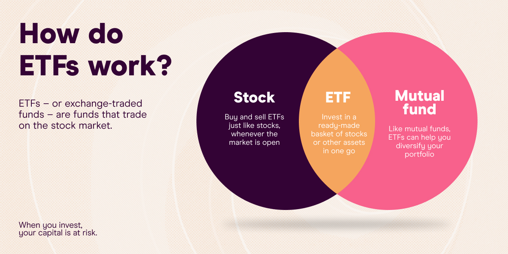

CashFlowAcademy
Home
Budgeting
Saving
Investing
Debt Management
Login
ETFs

Introduction to ETFs
An ETFs guide provides valuable insights into Exchange-Traded Funds (ETFs), which are investment funds that trade on stock exchanges, similar to individual stocks. ETFs offer investors exposure to a diversified portfolio of securities, such as stocks, bonds, commodities, or a combination of assets, in a single investment. These funds are designed to track specific market indices, sectors, or asset classes, providing a cost-effective and convenient way for investors to achieve diversification without having to buy each underlying security individually. The guide explains how ETFs work, their unique characteristics, and the benefits they offer, making them a popular choice among both individual and institutional investors seeking flexibility, liquidity, and transparency in their investment portfolios.
Benefits of Investing in ETFs
An in-depth ETFs guide outlines the numerous advantages of including ETFs in an investment strategy. Firstly, ETFs provide instant diversification by holding a broad range of assets, spreading risk and reducing exposure to any single security's performance. This diversification can help mitigate market volatility and provide a more stable return profile. Secondly, ETFs offer transparency as their holdings are disclosed daily, allowing investors to see precisely which securities the fund owns. Moreover, ETFs generally have lower expense ratios compared to traditional mutual funds, making them cost-efficient options for long-term investments. Additionally, the ability to trade ETFs throughout the trading day at market prices provides investors with flexibility and liquidity, enabling them to adjust their investment positions quickly in response to changing market conditions.
Considerations and Risks
A comprehensive ETFs guide also addresses the considerations and risks associated with investing in ETFs. While ETFs are considered a relatively safe and accessible investment vehicle, they are not immune to market risks. The value of an ETF's shares can fluctuate based on the performance of the underlying assets. Moreover, some ETFs may carry specific risks, such as leverage or concentration in a particular sector, which can lead to amplified gains or losses. Investors should carefully evaluate an ETF's prospectus to understand its investment strategy, objectives, and any potential risks. Additionally, they should assess their own investment goals, risk tolerance, and time horizon to select ETFs that align with their financial objectives. Monitoring the performance of ETFs regularly and consulting with a financial advisor can help investors make well-informed decisions and use ETFs effectively to enhance their investment portfolios.